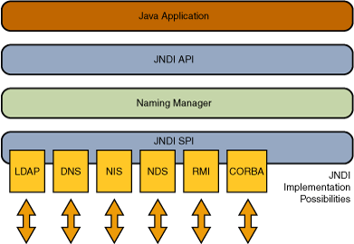

5.3.7. JNDI¶
5.3.7.1. 简介¶
JNDI（Java Naming and Directory Interface，Java命名和目录接口）是为Java应用程序提供命名和目录访问服务的API，允许客户端通过名称发现和查找数据、对象，用于提供基于配置的动态调用。这些对象可以存储在不同的命名或目录服务中，例如RMI、CORBA、LDAP、DNS等。
其中Naming Service类似于哈希表的K/V对，通过名称去获取对应的服务。Directory Service是一种特殊的Naming Service，用类似目录的方式来存取服务。

5.3.7.2. JNDI注入¶
JNDI注入是2016年由pentester在BlackHat USA上的 A Journey From JNDI LDAP Manipulation To RCE 议题提出的。
其攻击过程如下
攻击者将Payload绑定到攻击者的命名/目录服务中
攻击者将绝对URL注入易受攻击的JNDI查找方法
应用程序执行查找
应用程序连接到攻击者控制的JNDI服务并返回Payload
应用程序解码响应并触发有效负载
5.3.7.3. 攻击载荷¶
JDNI主要有几种攻击载荷：
CORBA
IOR
JNDI Reference
JNDI Reference
LDAP
Remote Location
Remote Object
RMI
Serialized Object
5.3.7.3.1. RMI Remote Object¶
攻击者实现一个RMI恶意远程对象并绑定到RMI Registry上，将编译后的RMI远程对象类放在HTTP/FTP/SMB等服务器上。其中Codebase地址由远程服务器的 java.rmi.server.codebase 属性设置，供受害者的RMI客户端远程加载。
利用条件如下：
RMI客户端的上下文环境允许访问远程Codebase。
属性
java.rmi.server.useCodebaseOnly的值为false。
其中JDK 6u45、7u21后，java.rmi.server.useCodebaseOnly 的值默认为true。
5.3.7.3.2. RMI + JNDI Reference¶
攻击者通过RMI服务返回一个JNDI Naming Reference，受害者解码Reference时会去攻击者指定的远程地址加载Factory类。这种方式原理上并非使用RMI Class Loading机制，因此不受 java.rmi.server.useCodebaseOnly 系统属性的限制。但是在JDK 6u132, JDK 7u122, JDK 8u113 后限制了Naming/Directory服务中JNDI Reference远程加载Object Factory类的特性。系统属性 com.sun.jndi.rmi.object.trustURLCodebase 、 com.sun.jndi.cosnaming.object.trustURLCodebase 的默认值变为false，即默认不允许从远程的Codebase加载Reference工厂类。
5.3.7.3.3. LDAP + JNDI Reference¶
LDAP服务的Reference远程加载Factory类不受 com.sun.jndi.rmi.object.trustURLCodebase 、com.sun.jndi.cosnaming.object.trustURLCodebase 等属性的限制，适用范围更广。